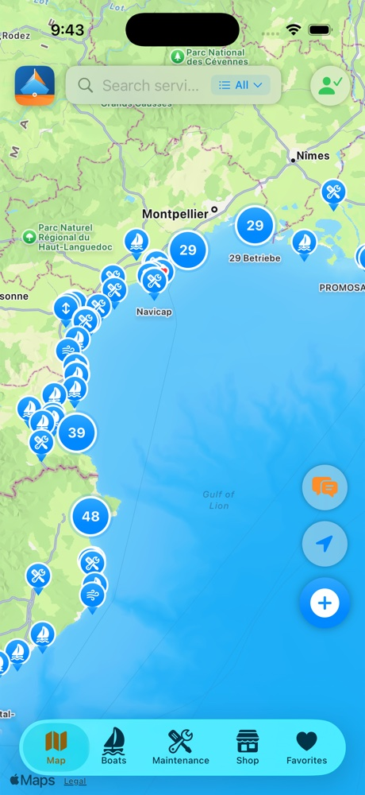
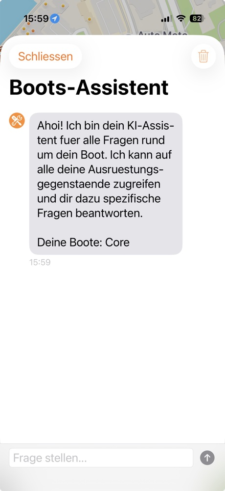
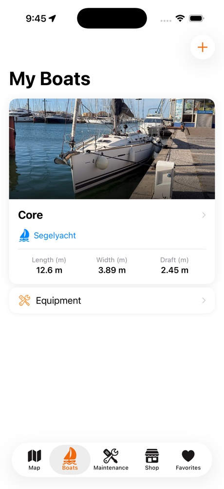

SKIPILY
ALWAYS · SAFE · READY TO SAIL
Werften, Service & Shops auf einer Karte — und ein KI-Bootsingenieur, der dein Boot kennt.



ALWAYS · SAFE · READY TO SAIL
Werften, Service & Shops auf einer Karte — und ein KI-Bootsingenieur, der dein Boot kennt.


